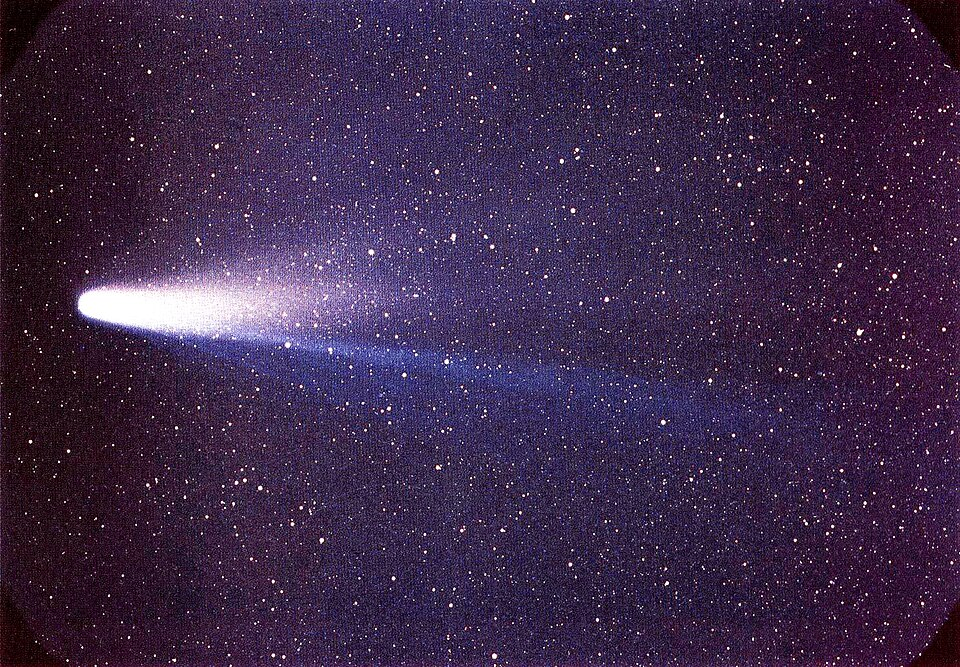

The Solar System is the planetary system of the Sun.
It formed about 4.6 billion years ago with the collapse of a dense region of a molecular cloud, which created the Sun and a protoplanetary disc that eventually formed the orbiting bodies.
The system features eight known planets that orbit the Sun.
The closest four ones - Mercury, Venus, Earth, and Mars - are smaller in size and consist mostly of solid materials like rocks and metals, while the outer four - Jupiter, Saturn, Uranus, and Neptune - are much bigger in size and are mostly made of hydrogen, helium, or include other compounds that are refered to as volatiles.
Apart from planets, the Solar System includes many smaller bodies like natural satellites, asteroids, comets, centaurs, trans-Neptunian objects, and meteoroids.
The Solar System formed approximately 4.6 billion years ago from a giant, rotating cloud of gas and dust known as the solar nebula.
According to the most widely accepted theory, this cloud began to collapse under its own gravity, possibly triggered by the shockwave from a nearby supernova.
As the nebula collapsed, it spun faster and flattened into a rotating disk called a protoplanetary disk.
At the center, gravity pulled more and more material together into a protostar that would become the Sun, which accounts for over 99% of the Solar System’s mass.
The remaining material in the disk started to accrete, forming planetesimals - small bodies that would eventually grow into planets.
Closer to the Sun, where temperatures were higher, only rocky materials and metals could solidify, leading to the formation of the inner, terrestrial planets: Mercury, Venus, Earth, and Mars.
Further out, where it was colder, icy and gaseous materials could also condense, giving rise to the gas giants (Jupiter and Saturn) and the ice giants (Uranus and Neptune).
Leftover debris that didn’t become part of planets formed minor planets and comets.
With time, the protostar Sun achieved hydrostatic equilibrium and began thermonuclear fusion.
In 5 billion years, the Sun will enter its red giant phase after turning all of its hydrogen into helium.
It will destroy Mercury, venus, and possibly Earth, and the habitable zone will move all the way to the orbit of Jupiter.
Eventually it will use up all of the helium and won't be able to commense the fusion of heavier elements and will send its outer layer into space forming a planetary nebula and leaving a dense white dwarf.
The Solar System can be divided into several regions based on common features of the most dominant orbiting bodies.

The Sun is the star of the Solar System
Main article: Sun
The Sun is the sole star of the Solar System, primarily composed of hydrogen and helium plasma.
It is a G-type main-sequence star and accounts for 99.86% of the total mass of the Solar System.
It generates energy through nuclear fusion in its core, where hydrogen atoms fuse to form helium, releasing vast amounts of light and heat.
The Sun’s immense gravity keeps all the planets, dwarf planets, comets, and other objects in orbit around it.
Its magnetic field and solar wind - a stream of charged particles - extend far beyond the planets, shaping the heliosphere and influencing space weather throughout the Solar System.
The inner planets, also known as terrestrial planets, are Mercury, Venus, Earth, and Mars.
The Sun's habitable zone extends from the orbit of Venus to that of Mars.
These worlds are characterized by their solid, rocky surfaces and relatively small sizes compared to the outer planets.
Mercury, the closest to the Sun, is a barren, cratered world with extreme temperature variations.
Venus, similar in size to Earth, has a thick, toxic atmosphere rich in carbon dioxide, creating a runaway greenhouse effect that makes it the hottest planet in the Solar System.
Earth is the only known planet to support life, with liquid water, a breathable atmosphere, and a diverse biosphere.
Mars, the “Red Planet,” is cold and dry, with evidence of past water activity.
Mercury, Venus, Earth, Mars
There are only three natural satellites orbiting these planets - the Moon, which orbits the Earth, and Phobos and Deimos, which orbit Mars.
Other bodies that orbit the Sun around the terrestial planets are numerous asteroid populations, including Near-Earth asteroids.

Ceres is the largest asteroid
Main article: Asteroid belt
The asteroid belt is a region located between the orbits of Mars and Jupiter filled with millions of rocky bodies called asteroids.
These range in size from Ceres, the largest asteroid and a dwarf planet, to small rocks.
Other large asteroids include Vesta, Pallas, and Hygiea.
The belt is thought to be a remnant of the early Solar System, where the gravitational influence of Jupiter prevented the formation of a planet.
The asteroids are spread out over a vast area, with hundreds of thousands of kilometers separating most of them.
Beyond the asteroid belt lie the outer four planets: Jupiter, Saturn, Uranus, and Neptune.
The former two are gas giants, while the latter two are ice giants (Uranus and Neptune), all characterized by their massive sizes, thick atmospheres, ring systems and numerous moons.
Jupiter, the largest planet, is recognised for its Great Red Spot and has a strong magnetic field.
Saturn is famous for its higly visible ring system, made of ice and rock particles.
Uranus and Neptune are much colder and windier, with blue hues due to methane in their atmospheres.
Many unique planet-like satellites orbit these planets - Titan has a thick atmosphere and liquid methane features, Io is highly geologically active and hosts hundreds of volcanoes, and Europa and Enceladus are icy worlds with subsurface oceans and young surfaces affected by their active geology.
There are also other major groups that orbit near the outer planets - Hilda asteroids around Jupiter, the trojans of Jupiter, and centaurs.
Jupiter, Saturn, Uranus, Neptune

Pluto is the largest trans-Neptunian object
Main article: Trans-Neptunian object
Beyond Neptune’s orbit lie numerous bodies known as trans-Neptunian objects.
The Kuiper Belt comprises the most known TNOs, including Pluto, Haumea, and Makemake.
Other regions incluse the scattered disc (TNOs with greater inclination than those of the Kuiper belt), and extreme TNOs, which have very distant and sometimes highly eccentric orbits.
The biggest members of these two groups are Eris and Sedna respectively.
These trans-Neptunian objects are remnants from the early Solar System and are composed mostly of frozen volatiles like water, ammonia, and methane.
Pluto, once considered the ninth planet, is now classified as a dwarf planet and is the largest of the TNOS.
There are several known extreme TNOs with highly eccentric orbits, known as sednoids, that suggest a possible ninth planet that have changed their orbits.
Heliosphere and Oort cloud
Far from the Kuiper belt lies the heliopause, which is the greatest extent of the so-called heliosphere.
This is the greatest extend of the solar magnetosphere and solar winds.
Beyond the heliopause lies interstellar space.
Two spacecrafts are known to have left the heliosphere - Voyager 1 and 2 - and three others are on their way - Pioneer 10 and 11, and New Horizons.
Contact with the Pioneer spacecrafts has been lost, so the exact moment they cross the heliopause will be uncertain.
The Oort cloud is a theoretical spherical shell of icy objects believed to surround the Solar System at distances up to 100,000 astronomical units (AU).
The Oort cloud is thought to be the source of long-period comets, which occasionally enter the inner Solar System after gravitational perturbations.
While not inside the Solar System, the Oort cloud has its origin in the creation of the planets, but were sent into much more distant orbits.

The Halley comet seen from Earth in 1986.
Main article: Comet
Comets are icy bodies that originate from the outer reaches of the Solar System and begin to release gases when approaching their perihelion.
These vapors form a glowing coma and often a tail that can stretch millions of kilometers.
They are composed of ice, dust, and organic compounds.
Famous comets like Halley’s Comet and Comet Hale-Bopp have captivated human imagination for centuries, since they can be seen from Earth.
External links